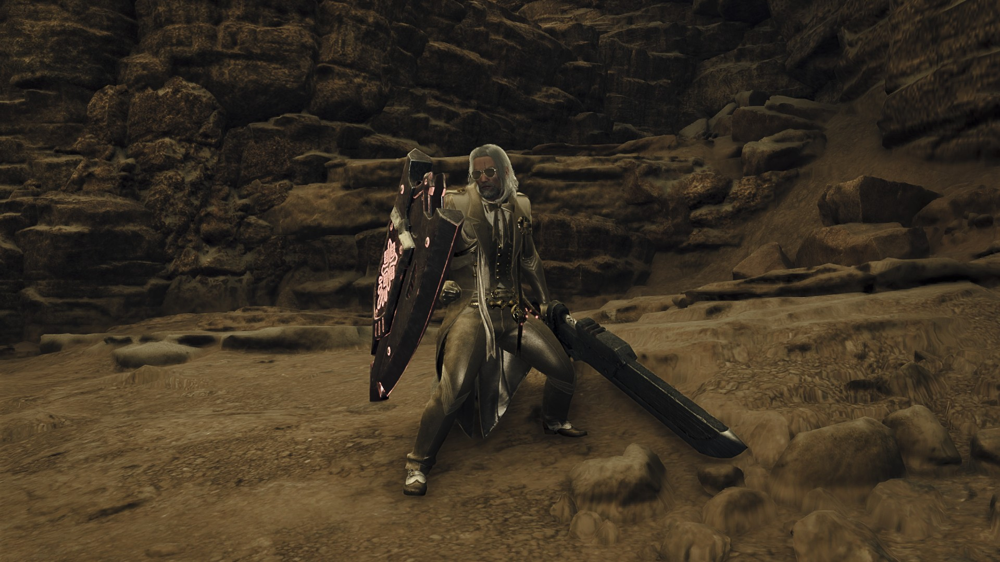
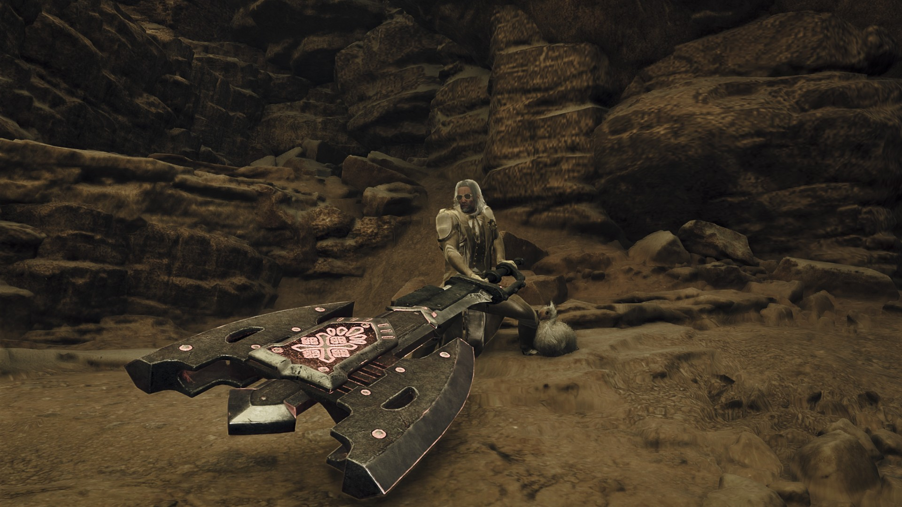
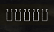
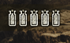
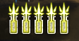
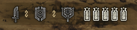
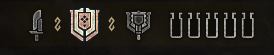

Guide
The Charge Blade is a complex weapon with several distinct features and mechanics. This section will break down how it works and how to use it.
*Keyboard inputs may vary, keybinds can be adjusted under Keyboard Configuration in the system menu tab.
| Input | Xbox/Steam Controller | Playstation | Keyboard+Mouse |
|---|---|---|---|
| Light Attack | Y | Triangle | Left Click |
| Heavy Attack | B | Circle | Right Click |
| Block | RT | R2 | Mouse 5/Side Mouse (R If None) |
| Aim Focus Mode | LT | L2 | Left Alt |
| Focus Strike | RB | R1 | Shift |
The Basics
The Charge Blade is broken up into two distinct forms: Sword Mode and Axe Mode.
Sword mode is more defensive, able to block with the shield and attack rather quickly, while axe mode deals far more damage,
but leaves you more vulnerable. Generally, you'll be switching modes very frequently depending on the situation.
There are several ways to transition between modes:
- [Sword -> Axe]: Light Attack + Block
- [Sword -> Axe]: Light Attack + Heavy Attack x3 (AED Combo)
- [Axe -> Sword]: Block
- [Axe -> Sword]: Light Attack + Heavy Attack x2 (SAED Combo)





Phials
The central mechanics of the charge blade revolve around phials, indicated by the special gauge in the top left under your health and stamina bar. Phials are charged by attacking in sword mode, then stored by pressing Heavy Attack + Block. There are a few key applications for phials, but primarily they serve to boost your axe mode attacks.
Charging the Shield
Once your phials are stored, the next step is typically charging your shield. The main method is by holding Heavy Attack immediately after storing your phials, consuming them in the process. The middle shield indicator will glow while it is charged, the duration depending on how many phials you deposited. With a charged shield, your axe mode attacks recieve a boost in damage, and some additional moves are unlocked.


Playstyles
Once your shield is charged and phials are refilled, there are two distinct playstyles the player can pursue. Though these are not mutually exclusive, typically you should focus on one or the other, as optimizing your equipment for both simultaneously is rather difficult.
SAED
This playstyle is centered around utilizing your phials in axe mode,
most importantly using your SAED (Super Amped Elemental Discharge) very frequently. This is your strongest
singular attack, and it results in all of your phials being consumed in massive, damaging explosions. No additional setup is required
past charging your shield, though you will be refilling your phials very frequently, while also making sure your shield stays charged 100% of the time.
Notable Combos:
- SAED Combo (From Sword Mode): Light Attack + Heavy Attack x3 (x2 immediately after stroring phials)
- SAED Combo (Axe Mode): Light Attack + Heavy Attack x2
- Quick Phials (Sword Mode): Heavy Attack (Held) > Light Attack > Repeat
Savage Axe
The other primary playstyle revolves around savage axe, another key mechanic that can be activated for a short duration much like charging your shield. Savage axe allows you to sustain your attacks in axe mode, dealing additional damage against a specific point while the input is held. Toggling savage axe is situational though, as it must be enabled by one of a few factors:
- Using a focus strike on an open wound/weak point
- Light Attack input after a perfect guard (timing your Block input to the moment a monster attacks)
- Light Attack input after a power clash
- Mounted finisher attack
Notable Combos:
- AED Loop: Heavy Attack (Held) x4 > Repeat
- Axe Refresh: Block (Perfect Guard) > Light Attack
General Flow
SAED Playstyle
Savage Axe Playstyle
Advanced Tips
Guard Points
Certain weapon move animations feature moments where the shield is positioned in front of the player. These are known as guard points, where the weapon will automatically block should you take a hit. Guard points can be exploited, allowing certain combos to chain together and rebound off of monster attacks more effectively.
Charging the Sword
You can also charge your sword once your shield is charged by holding Light Attack after storing phials. This enhances your sword attacks with follow-up phial explosions, much like axe attacks with stored phials.